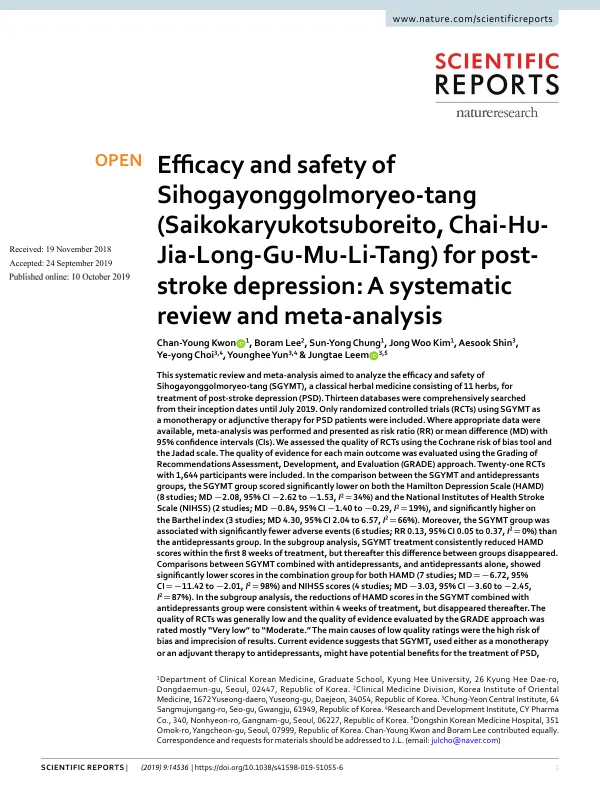

Efficacy and safety of Sihogayonggolmoryeo-tang (Saikokaryukotsuboreito, Chai-Hu-Jia-Long-Gu-Mu-Li-Tang) for post-stroke depression: A systematic review and meta-analysis
Kwon CY, Lee B, Chung SY, Kim JW, Shin A, Choi Yy, Yun Y, Leem J
Scientific Reports 9(1):14536

첫 장 · 오픈액세스First page · open access
논문 소개Summary
뇌졸중 뒤에 오는 우울은 회복을 가로막고 재활 참여를 떨어뜨립니다. 항우울제를 쓰지만 부작용과 순응도 문제가 남습니다. 시호가용골모려탕은 열한 가지 약재로 이루어진 고전 처방으로 이 자리에 쓰여 왔는데, 그 효과와 안전성을 한자리에 모아 본 적은 없었습니다.
열세 개 데이터베이스를 처음부터 2019년 7월까지 훑어 무작위 대조시험 21편, 참여자 1,644명을 모았습니다. 코크란 비뚤림 위험 평가도구와 자다드 척도로 시험의 질을 보고, 주요 결과의 근거 수준은 GRADE 접근법으로 평가했습니다.
항우울제와 견준 비교에서 시호가용골모려탕군은 해밀턴 우울척도가 유의하게 낮았고(평균차 -2.08) 미국립보건원 뇌졸중 척도도 낮았으며(평균차 -0.84) 바델 지수는 높았습니다(평균차 4.30). 이상반응은 시호가용골모려탕군에서 유의하게 적었습니다(위험비 0.13). 항우울제에 시호가용골모려탕을 더한 비교에서도 해밀턴 우울척도와 뇌졸중 척도가 더 낮았습니다.
그런데 하위군 분석이 이 그림을 흔듭니다. 항우울제와 견준 비교에서 우울척도의 감소는 치료 8주 안에서만 일관되었고 그 뒤에는 두 군의 차이가 사라졌습니다. 병용 비교에서도 감소는 4주 안에서만 일관되었고 이후 사라졌습니다. 초기에 벌어졌다가 좁혀지는 모양이므로 오래 쓸 때의 이득은 이 자료로 말할 수 없습니다.
무엇보다 포함된 시험의 질이 대체로 낮았고 GRADE로 매긴 근거 수준은 대부분 「매우 낮음」에서 「보통」에 머물렀습니다. 병용 비교의 이질성은 98%에 이르러 통합값을 그대로 읽기 어렵습니다. 숫자가 한쪽을 가리켜도 그 숫자를 얼마나 믿을 수 있는지는 따로 물어야 하고, 이 고찰은 그 물음을 빠뜨리지 않았습니다.
Depression after stroke obstructs recovery and reduces participation in rehabilitation. Antidepressants are used, but adverse effects and adherence remain problems. Sihogayonggolmoryeo-tang, a classical formula of eleven herbs, has been used in this place, yet its efficacy and safety had never been assembled.
Thirteen databases were searched from inception to July 2019, yielding 21 randomised controlled trials with 1,644 participants. Trial quality was assessed with the Cochrane risk of bias tool and the Jadad scale, and the certainty of evidence for each main outcome with the GRADE approach.
Against antidepressants, the herbal group scored significantly lower on the Hamilton Depression Scale (mean difference −2.08) and on the National Institutes of Health Stroke Scale (−0.84), and higher on the Barthel index (4.30). Adverse events were significantly fewer in the herbal group (risk ratio 0.13). Where the formula was added to antidepressants and compared with antidepressants alone, both depression and stroke scale scores were again lower.
Subgroup analysis, however, unsettles this picture. Against antidepressants, the reduction in depression scores held consistently only within the first eight weeks of treatment, after which the difference between groups disappeared. In the add-on comparison the reduction held only within four weeks, and vanished thereafter. The shape is of a gap that opens early and then closes, so nothing can be said from these data about benefit over longer use.
Above all, the quality of the included trials was generally low and the GRADE ratings mostly ran from "very low" to "moderate". Heterogeneity in the add-on comparison reached 98%, which makes the pooled figure hard to read at face value. Even when numbers point one way, how far those numbers can be trusted is a separate question — and this review does not omit it.
인용Cite
Kwon CY, Lee B, Chung SY, Kim JW, Shin A, Choi Yy, Yun Y, Leem J. Efficacy and safety of Sihogayonggolmoryeo-tang (Saikokaryukotsuboreito, Chai-Hu-Jia-Long-Gu-Mu-Li-Tang) for post-stroke depression: A systematic review and meta-analysis. Scientific Reports. 2019;9(1):14536. doi:10.1038/s41598-019-51055-6